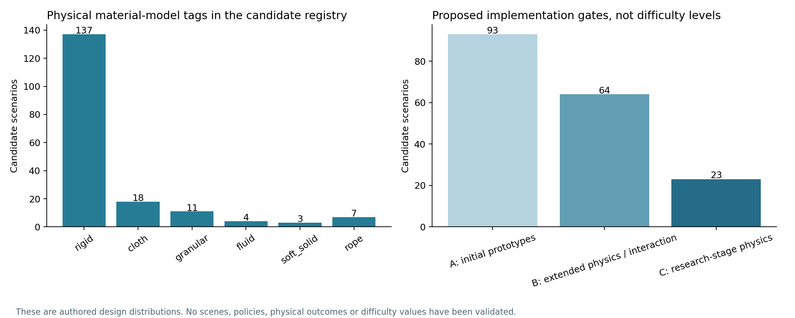

章節目錄與附錄
整體設計、廣度與目標待完善事項與驗收Benchmark × 領域／場景／題數規模方案與來源查核完整原生來源盤點01研究目標與當前狀態02用一個例子理解整套系統03規模的六個 granularity levels04文獻地圖、Ego 與預測研究05和既有 benchmark 比，哪些可以復用06完整 benchmark 的覆蓋設計07示範、標註、資料切分與有效性08評測協定、指標與比較方法09六個詳細情境：從概念到驗收10難度如何量化11題數、領域與執行預算12工程實作、資料格式與發布13論文流程與 milestones14版本口徑、閱讀結論與尚待決策48 個任務家族180 個情境藍圖24 個 Ego 題型40 個指標完整分類軸原生規模比較168 篇文獻來源與資料字典完整 benchmark 的覆蓋設計
- v0.4 為 12 個核心場域各提出至少 100 個有效任務繫結、8 個家族、3 類機制的支撐目標。
- 共同 coverage cell 使用場域 × 家族 × 必需機制；每格需要實際任務與例項證據。
- 材料、觀測、機體、學習設定各自記錄；原 180 個藍圖是設計種子。
完整任務庫初始目標為 2,000–3,000 個 G2；任務數與有效覆蓋各以最大可比基準至少 2 倍為目標。新增場域、家族、材料與機體的支撐配額。180 個藍圖保留為設計種子，原 100–140 預算屬歷史方案。
閱讀整體設計、配額、架構與 milestones →目前還缺哪些證據與實作 →
12 個應用場域：描述用途，不混入技能
| ID／場域 | 邊界 | B0 數 |
|---|---|---|
| D01 · 居家生活空間 | 私人住宅中的整理、備餐、衣物和家庭裝置；以住家任務目的作主分類。 | 18 |
| D02 · 餐飲服務場所 | 餐廳、商用備餐與餐桌服務；與客房布品服務分開。 | 18 |
| D03 · 零售門店 | 面向商品陳列、門店揀選、包裝和顧客服務的場景。 | 12 |
| D04 · 倉儲與配送場所 | 庫存、揀貨、集貨、載運和路線配送；不是將所有移動任務都放在此。 | 18 |
| D05 · 辦公與行政空間 | 檔案、辦公裝置、內部物品管理和可驗證的數位到實體工作。 | 12 |
| D06 · 工坊、製造與維修場所 | 零件、機構、工具、拆裝和功能驗收。 | 20 |
| D07 · 實驗室例行物件操作 | 器材、容器、惰性顆粒與模擬裝置程式；不驗證化學或生物效果。 | 12 |
| D08 · 旅宿與洗衣服務 | 布品、客房整理、洗衣周轉和住宿服務準備；餐廳歸 D02。 | 14 |
| D09 · 建築設施維護服務 | 公共或商用建築的表面處理、裝置復位、耗材與維護工具管理。 | 18 |
| D10 · 園藝與戶外作業場域 | 工具、容器、作物幾何代理和戶外搬運；不宣稱模擬植物生長效果。 | 12 |
| D11 · 輔助生活服務場域 | 非臨床的日常物品協助與模擬人類互動；不評估醫療效果。 | 12 |
| D12 · 公共場館與活動場域 | 圖書館、展館、活動空間及公眾設施中的整理、準備與服務。 | 14 |
每個情境指定一個主要場域方便計數，跨類用途可另加標籤。同一摺衣家族可以出現在住家與旅宿；導航、雙臂、記憶不是應用場域。180 個藍圖中，178 個是執行候選，2 個是主動場景問答；後者不放進 T5 操作成功率。
48 個家族與完整情境
| 查閱範圍 | 閱讀導引（精確名稱見附錄 A） |
|---|---|
| F01–F12 | 取放、分類、配置、堆疊、裝箱、機構、遮擋、歷史、盤點、檢查與程式 |
| F13–F19 | 封口、插入、裝配／拆卸、工具、緊固與大型物協調搬運 |
| F20–F26 | 柔性片材、摺疊與收納、懸掛、穿線、繫結與套合 |
| F27–F34 | 接觸覆蓋、散物收集、顆粒／流體轉移、配量、攪動、分割與成形 |
| F35–F42 | 裝置程式、導航、尋物、載運、配送、通行、交接與共享資源 |
| F43–F48 | 意圖協助、共同支承、跟隨、主動資訊、數位到實體與工作區復原 |
家族按語義需求整理，例如「開啟—存入—關閉」、「依歷史取物」、「指定摺法」、「工具操作」、「共同支承」、「數位查詢—實體完成」。這 48 個是本計畫的 authored grouping，跨工作 canonical mapping 尚未完成。
附錄 A 完整列出每個家族的子目標圖、證據、近失敗、擾動、物理需求和 A/B symbolic template；附錄 B 完整列出 180 個情境的初態、A/B 目標與專屬驗收。它們是設計規格，不是已寫好的環境或可執行 predicates。
八個評測模組
| 模組 | 模型輸出 | 評測／oracle 分界 |
|---|---|---|
| T1 · 理解、定位與狀態 | 物件、關係、狀態、證據位置或答案 | 依子任務分開報告 accuracy/F1、定位誤差、關係一致性、證據正確率 診斷：特權 scene state 僅供 evaluator P029 P026 P017 P042 P168 |
| T2 · 情節記憶 | 過去事件／位置、關聯證據、記憶引導的行動 | 記憶 QA 與證據正確率、幹擾量曲線；行動成功另報 診斷：完整無幹擾歷史與正確檢索，分別作診斷 P028 P033 P043 P115 |
| T3 · 動作、互動與軌跡預測 | 未來動作、物件／接觸、接觸時間、2D/3D 軌跡與不確定性 | 固定 horizon/K 下的 label/contact 指標、時間誤差、ADE/FDE、適用的校準指標 診斷：真實未來只供標註；不能餵給 policy P046 P047 P049 P050 P052 P053 P058 |
| T4 · 目標與計畫 | 目標圖、子任務依賴圖、可執行的高層計畫 | 目標一致性、語義 transition validity、goal reachability；物理執行另報 診斷：oracle goal、oracle state、oracle plan 分開比較 P031 P072 P101 P123 |
| T5 · 閉迴路任務執行 | 機器人動作與完整 trajectory | 目標成功、符合約束的完整成功、pair success、時間、幹預、覆蓋 診斷：專家／特權狀態控制器驗證可解性 P064 P067 P100 P071 P083 P164 |
| T6 · 診斷與恢復 | 錯誤型別、狀態修復、恢復後完成 | 診斷F1、完整成功、觸發率、條件式恢復、額外成本；snapshot 另列 診斷：已知錯誤型別／恢復子目標，不與主榜混合 P112 P022 P109 P165 P113 |
| T7 · 互動與協作 | 協作動作、詢問、等待、交接與角色分配 | 共同完成、時序／協議違反、回應延遲、協助負擔；知覺QA獨立 診斷：明確人類意圖與合作方狀態僅作上界 P141 P143 P147 P168 P145 P146 |
| T8 · 世界模型與可執行性 | 動作條件化的未來狀態／影片及可轉成動作的預測 | 狀態／接觸一致性、固定 adapter 下的執行成功；視覺品質獨立 診斷：固定重建／動作轉換器的 oracle reconstruction P054 P149 P150 P152 P151 |
每個模組需通過自己的資料條件：T2 要證明歷史必要；T3 要有合法未來與時間標籤；T7 要固定 partner model；T8 要固定重建／動作轉換介面。以來源充分性決定可生成哪些 packets，而非把 180×8 當成覆蓋量。
觀測、機體與學習設定是不同軸
O1–O8 是可重疊的來源 presets：文字／語音、頭戴影片、胸前／身體攝影機、外部／多視角、剪輯 VLOG、模擬 robot 示範、多 session 歷史、非人類第一視角診斷。頭戴片段也可能是剪輯 VLOG；不能把這兩種標籤當互斥來源。
正式 metadata 分開記錄 agent origin、camera mount、view pairing、temporal packaging、language、history 和 sensors。EgoBody 研究從頭戴裝置觀察人體，不能只憑名稱把它當成胸前攝影機資料。非人類視角可測域移與 egomotion，但不能增加 robot 實體操作覆蓋。P019 P025
R1–R6 分別是固定單臂、固定雙臂、固定靈巧雙臂、移動單臂、移動雙臂、全身／人形的候選能力配置，不是已選定六臺機器人。L0–L4 分別是 frozen、offline adaptation、few-shot、online adaptation、continual learning；這些引數更新設定與 T2 的推理時記憶分開。
34 個能力、12 個變化軸、8 個來源 preset、獨立觀測軸、6 個 profile 與 5 種 learning regimes 全部定義在附錄 E。
物理模型與覆蓋缺口
| 材料模型 | 全部 B0 | T5 候選 | T5 家族（可跨材料） |
|---|---|---|---|
| 剛體 (rigid) | 137 | 135 | 33 |
| 布料 (cloth) | 18 | 18 | 11 |
| 顆粒 (granular) | 11 | 11 | 4 |
| 繩索 (rope) | 7 | 7 | 2 |
| 流體 (fluid) | 4 | 4 | 1 |
| 其他柔順固體 (soft_solid) | 3 | 3 | 2 |
材料模型分為 rigid、cloth、rope、granular、fluid、soft_solid。Articulation 是物件結構，不能當成材料；137 個 rigid 藍圖中包含 2 個資訊情境，真正 T5 候選為 135。
目前仍以剛體為主。4 個 fluid 情境集中在 1 個執行家族，不能叫做完整流體操作覆蓋。繩索、切割、人體／布料、動態支承和世界模型的驗證仍有限。場景換名字不會自動增加接觸機制或物理能力。
接觸覆蓋不等於消毒；機械攪動不等於化學均勻；裝置狀態機不等於真實熱學或洗淨效果。若只驗證邏輯程式或模擬代理量，就按實際內容命名與分榜。

A／B／C 是提出的實作分組：A 93 個偏原型優先；B 64 個需要柔性物、特殊接觸或互動；C 23 個涉及更專項的物理／拓撲／複合需求。它們不是已量測的難度級別。
附錄 E 的場域×能力矩陣分開「家族本身需求」、「可額外產生的 probes」與聯集。所有 verified cells 仍為 0；C33／C34 等觀測能力主要由額外 24 個 Ego 題型支援，不能灌入操作成功率。